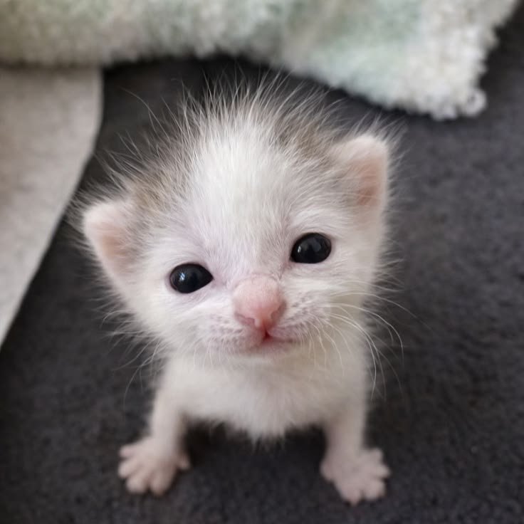

Erika: mi lugar bonito en medio del ruido

A Erika la conocí en internet, como se conocen muchas cosas importantes en esta época rara: primero como una notificación, una conversación, una curiosidad pequeña; después como una persona real, sentada conmigo tomando bubble tea, haciendo que el mundo se sintiera un poquito más suave.
Lo primero que me gustó de ella fueron sus ojos cafés. No unos ojos cafés cualquiera, sino de esos que parecen guardar calorcito, como una tarde tranquila después de demasiados días ruidosos. También me gustó su pelo rojizo, su piel blanca y esa forma suya de existir que llama la atención sin pedir permiso.
Pero después, como pasa con las personas que de verdad importan, lo bonito dejó de ser solo lo que se veía. Empezó a ser su risa, que es única. Su manera de ser divertida sin esfuerzo. Su forma de llevarse bien con todo el mundo, como si tuviera una facilidad natural para abrir ventanas donde otros solo ven paredes.
Hay algo que me gusta mucho: cuando me mira como un gatito bebé. No sé cómo explicarlo sin sonar cursi, pero tampoco quiero evitarlo. Es una mirada que me baja la guardia, como si por un rato no tuviera que actuar fuerte, ni serio, ni perfectamente armado. Como si pudiera simplemente existir ahí, medio tonto, medio feliz, medio goshdo pto, pero querido.
Desde que está conmigo, siento que algo en mí se abrió. Me volví más extrovertido, más sociable, más dispuesto a acercarme al mundo. Ella no me cambió como quien intenta arreglar una cosa rota; más bien me acompañó como quien prende una lucecita en una habitación que ya estaba ahí, pero que yo no siempre sabía usar.
Enjambre me recuerda mucho a ella. No solo por una canción específica, sino por esa mezcla de romanticismo, nostalgia y algo medio eléctrico que tienen sus canciones. Erika se siente un poco así para mí: como una canción que empieza suave, pero se queda dando vueltas en el pecho incluso después de terminar.
Me gusta que exista en mi vida con esa mezcla de ternura y caos bonito. Me gusta que podamos tener bromas nuestras, palabras nuestras, formas raras de decirnos cariño. Me gusta que “goshdo/a pto/a” tenga sentido entre nosotros, aunque desde afuera parezca un archivo corrupto de amor.
Si algún día ella lee esto, quiero que sienta que no la puse aquí como adorno. La puse porque este proyecto habla de mí, y si habla de mí, tenía que aparecer ella. Porque hay personas que no solo pasan por tu vida: se vuelven parte del color de las cosas.
Erika es eso para mí: una parte bonita de mi mundo, una risa que reconozco, unos ojos cafés que me gustan demasiado, una presencia que me hizo más abierto, más sociable y más yo.
Erika no es una pestaña más abierta en mi cabeza. Es de esas ventanas que no quiero cerrar.